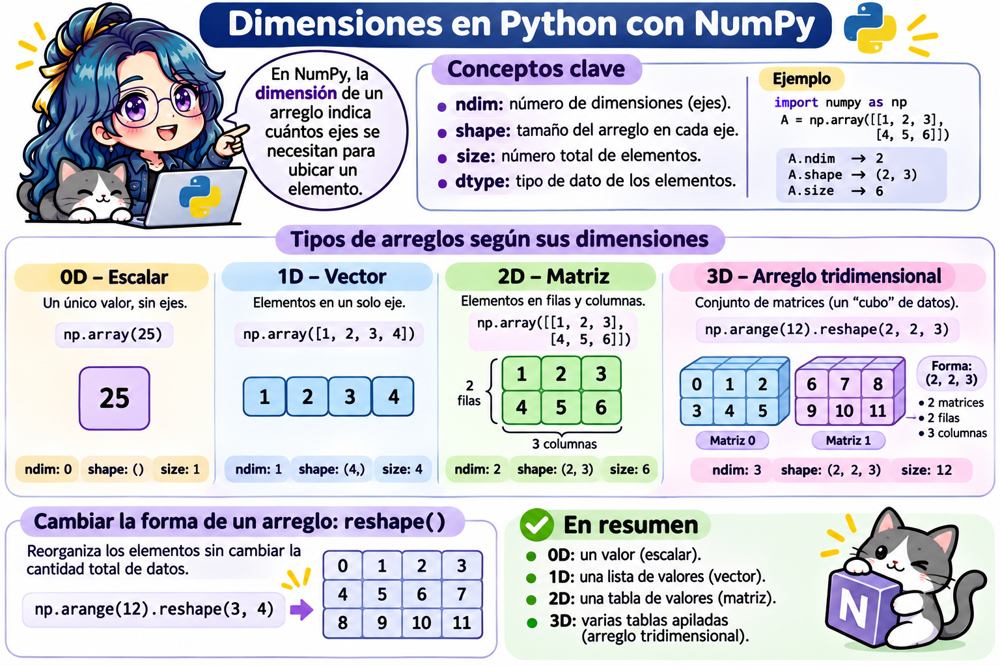
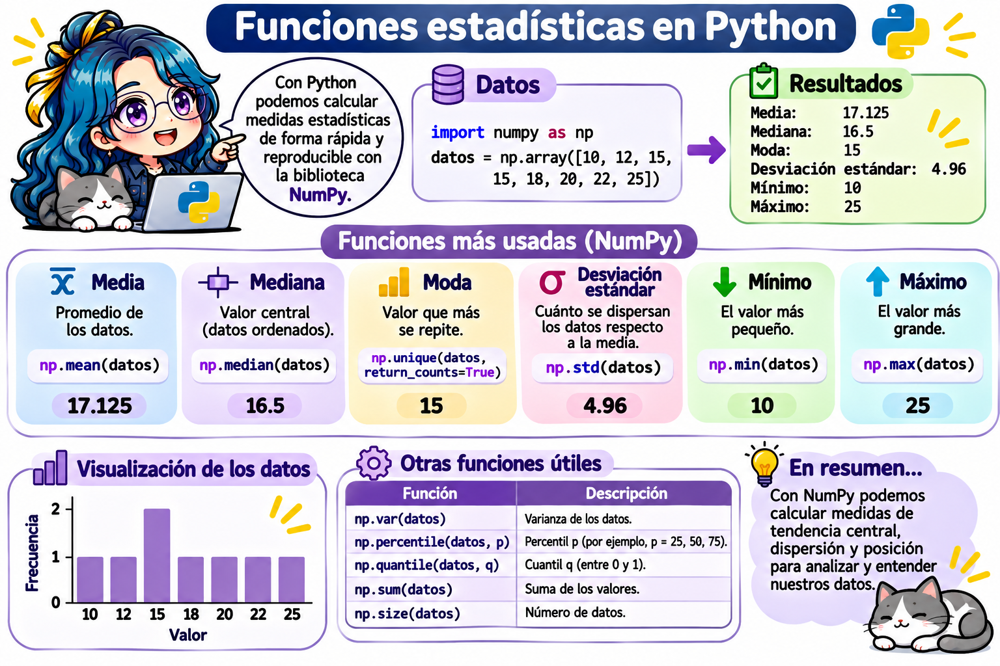

Código
import numpy as np
print(np.__version__)2.5.4Fecha: 05 de noviembre, 2026
NumPy (Numerical Python) es la biblioteca base del cómputo científico en Python. Su objeto principal es el arreglo (ndarray): una colección de números del mismo tipo, organizada en una o más dimensiones, con la que podemos hacer operaciones matemáticas de forma rápida y con muy poco código.
En este capítulo veremos:
Si trabajas en tu computadora, instala NumPy en tu entorno virtual (consulta el apéndice Entornos para trabajar con Python):
source ~/.venvs/quarto-python/bin/activate
python -m pip install numpyEn Google Colab y en los editores de esta página ya está instalado. Por convención, NumPy se importa con el alias np:
import numpy as np
print(np.__version__)2.5.4Una lista y un arreglo se parecen, pero se comportan distinto con las operaciones matemáticas:
lista = [1, 2, 3, 4]
arreglo = np.array([1, 2, 3, 4])
print("Lista * 2: ", lista * 2) # Repite la listaLista * 2: [1, 2, 3, 4, 1, 2, 3, 4]print("Arreglo * 2:", arreglo * 2) # Multiplica cada elementoArreglo * 2: [2 4 6 8]Lista (list) |
Arreglo de NumPy (ndarray) |
|
|---|---|---|
| Tipos de elementos | Puede mezclar tipos: [1, "a", True]. |
Todos del mismo tipo (dtype). |
+ |
Concatena: [1, 2] + [3, 4] → [1, 2, 3, 4]. |
Suma elemento a elemento: [4, 6]. |
* 2 |
Repite la lista. | Multiplica cada elemento. |
| Dimensiones | Listas dentro de listas. | Atributos ndim y shape. |
| Velocidad | Más lenta para cálculos numéricos. | Mucho más rápida. |
| Ideal para | Colecciones generales. | Vectores, matrices y cálculo numérico. |
| Función | ¿Qué crea? | Ejemplo | Resultado |
|---|---|---|---|
np.array() |
Un arreglo a partir de una lista. | np.array([1, 2, 3]) |
[1 2 3] |
np.arange() |
Una secuencia, como range(). |
np.arange(0, 10, 2) |
[0 2 4 6 8] |
np.linspace() |
n valores igualmente espaciados, incluyendo el final. |
np.linspace(0, 1, 5) |
[0. 0.25 0.5 0.75 1.] |
np.zeros() |
Un arreglo lleno de ceros. | np.zeros((2, 3)) |
Matriz 2 × 3 de ceros. |
np.ones() |
Un arreglo lleno de unos. | np.ones(4) |
[1. 1. 1. 1.] |
np.full() |
Un arreglo lleno de un valor. | np.full((2, 2), 7) |
Matriz 2 × 2 de sietes. |
np.eye() |
La matriz identidad. | np.eye(3) |
Identidad 3 × 3. |
print(np.arange(1, 11))[ 1 2 3 4 5 6 7 8 9 10]print(np.linspace(0, 1, 5))[0. 0.25 0.5 0.75 1. ]print(np.zeros((2, 3)))[[0. 0. 0.]
[0. 0. 0.]]print(np.eye(3))[[1. 0. 0.]
[0. 1. 0.]
[0. 0. 1.]]Números aleatorios: se generan con un generador. Fijar una semilla (seed) permite obtener siempre los mismos números, lo que hace reproducible un análisis:
rng = np.random.default_rng(seed=2026)
print(rng.integers(0, 21, size=10)) # 10 enteros entre 0 y 20[17 3 0 13 7 9 1 7 13 7]print(rng.random(3)) # 3 decimales entre 0 y 1[0.79051825 0.90514384 0.17735319]En NumPy, la dimensión de un arreglo indica cuántos ejes se necesitan para ubicar un elemento.

Los atributos de un arreglo (que ya vimos en la 🐍 Actividad 2) describen su estructura:
| Atributo | ¿Qué contiene? |
|---|---|
ndim |
Número de dimensiones (ejes). |
shape |
Tamaño del arreglo en cada eje. |
size |
Número total de elementos. |
dtype |
Tipo de dato de los elementos. |
escalar = np.array(25)
vector = np.array([1, 2, 3, 4])
matriz = np.array([[1, 2, 3],
[4, 5, 6]])
cubo = np.arange(12).reshape(2, 2, 3)
print("0D ndim:", escalar.ndim, " shape:", escalar.shape, " size:", escalar.size)0D ndim: 0 shape: () size: 1print("1D ndim:", vector.ndim, " shape:", vector.shape, " size:", vector.size)1D ndim: 1 shape: (4,) size: 4print("2D ndim:", matriz.ndim, " shape:", matriz.shape, " size:", matriz.size)2D ndim: 2 shape: (2, 3) size: 6print("3D ndim:", cubo.ndim, " shape:", cubo.shape, " size:", cubo.size)3D ndim: 3 shape: (2, 2, 3) size: 12print(matriz.dtype)int64print(np.array([1.5, 2, 3]).dtype) # Basta un decimal para que todo sea floatfloat64reshape()El método reshape() reorganiza los elementos sin cambiar la cantidad total de datos. El producto de la nueva forma debe ser igual a size:
a = np.arange(12)
print(a.reshape(3, 4))[[ 0 1 2 3]
[ 4 5 6 7]
[ 8 9 10 11]]print(a.reshape(4, 3))[[ 0 1 2]
[ 3 4 5]
[ 6 7 8]
[ 9 10 11]]a.reshape(5, 3) # 5 × 3 = 15 ≠ 12: ValueErrorValueError: cannot reshape array of size 12 into shape (5,3)Las operaciones aritméticas se aplican elemento a elemento:
a = np.array([[1, 2], [3, 4]])
b = np.array([[5, 6], [7, 8]])
print("a + b =\n", a + b)a + b =
[[ 6 8]
[10 12]]print("a * b =\n", a * b) # Producto elemento a elemento (NO es el producto de matrices)a * b =
[[ 5 12]
[21 32]]print("a ** 2 =\n", a ** 2)a ** 2 =
[[ 1 4]
[ 9 16]]Funciones matemáticas (se llaman funciones universales): se aplican a cada elemento.
x = np.array([0, np.pi / 2, np.pi])
print(np.sin(x).round(3))[0. 1. 0.]print(np.sqrt([1, 4, 9, 16]))[1. 2. 3. 4.]print(np.exp([0, 1, 2]).round(3))[1. 2.718 7.389]Funciones estadísticas:
| Función | ¿Qué calcula? |
|---|---|
np.sum() |
Suma de los elementos. |
np.mean() |
Media. |
np.median() |
Mediana. |
np.std() |
Desviación estándar. |
np.min(), np.max() |
Mínimo y máximo. |
np.argmin(), np.argmax() |
Posición del mínimo y del máximo. |

datos = np.array([12, 7, 3, 7, 25, 12, 7, 9, 18])
print("Suma:", np.sum(datos))Suma: 100print("Media:", np.mean(datos).round(2))Media: 11.11print("Mediana:", np.median(datos))Mediana: 9.0print("Desviación estándar:", np.std(datos).round(2))Desviación estándar: 6.35print("Posición del máximo:", np.argmax(datos))Posición del máximo: 4Muchas de estas funciones también existen como métodos: datos.sum(), datos.mean(), datos.max().
axisEn una matriz, axis=0 opera por columnas (hacia abajo) y axis=1 por filas (hacia la derecha):
m = np.array([[1, 2, 3],
[4, 5, 6]])
print("Suma total:", m.sum())Suma total: 21print("Suma por columnas (axis=0):", m.sum(axis=0))Suma por columnas (axis=0): [5 7 9]print("Suma por filas (axis=1):", m.sum(axis=1))Suma por filas (axis=1): [ 6 15]Con NumPy podemos operar sobre todo el arreglo a la vez, sin recorrer los elementos uno por uno. A esto se le llama vectorización:
print("Suma de 1 a 100:", np.arange(1, 101).sum())Suma de 1 a 100: 5050print("10! =", np.arange(1, 11).prod())10! = 3628800print("Cuadrados del 1 al 5:", np.arange(1, 6) ** 2)Cuadrados del 1 al 5: [ 1 4 9 16 25]Además de ser corto, el código vectorizado es muy rápido, porque NumPy hace los cálculos internamente en el lenguaje C. En el capítulo de ciclos for compararemos la velocidad de un ciclo con la de NumPy.
Funcionan igual que las listas:
a = np.array([10, 20, 30, 40, 50])
print(a[0], a[-1]) # Primer y último elemento10 50print(a[1:4]) # Del índice 1 al 3[20 30 40]print(a[::2]) # De 2 en 2[10 30 50]Se escribe un índice por eje, separados por comas: m[fila, columna].
m = np.array([[1, 2, 3],
[4, 5, 6],
[7, 8, 9]])
print(m[1, 2]) # Fila 1, columna 2 -> 66print(m[0]) # Fila 0 completa[1 2 3]print(m[:, 1]) # Columna 1 completa[2 5 8]print(m[1:3, 1:3]) # Submatriz: filas 1-2, columnas 1-2[[5 6]
[8 9]]El símbolo : solo significa “todos los elementos de ese eje”.
Podemos pasar una lista de índices para obtener varios elementos a la vez, incluso repetidos:
a = np.arange(0, 100, 10)
print(a)[ 0 10 20 30 40 50 60 70 80 90]print(a[[2, 3, 2, 4, 2]])[20 30 20 40 20]m = np.array([[1, 2, 3], [4, 5, 6], [7, 8, 9]])
print(m[[1, 2], [1, 2]]) # Elementos (1, 1) y (2, 2) -> [5 9][5 9]También sirve para asignar valores:
a[[7, 9]] = -100
print(a)[ 0 10 20 30 40 50 60 -100 80 -100]Una comparación con un arreglo produce un arreglo de True y False (una máscara). Al usarla como índice, obtenemos solo los elementos donde la máscara es True; así podemos filtrar datos en una sola línea. Usamos los mismos operadores de comparación del capítulo de condicionales (==, !=, >, <, >=, <=), pero ahora la pregunta se hace a cada elemento del arreglo:
a = np.array([3, 13, 12, 10, 18, 6, 4, 8, 5])
mascara = a % 3 == 0
print(mascara)[ True False True False True True False False False]print(a[mascara]) # Solo los múltiplos de 3[ 3 12 18 6]print(a[a > 10]) # Directamente, sin guardar la máscara[13 12 18]Para combinar condiciones se usan & (y), | (o) y ~ (no), con paréntesis en cada condición:
print(a[(a > 5) & (a < 13)]) # Entre 5 y 13[12 10 6 8]print(a[(a < 5) | (a > 15)]) # Menores que 5 o mayores que 15[ 3 18 4]En los condicionales combinamos condiciones con and, or y not, pero con arreglos de NumPy se usan &, | y ~. Si escribes a > 5 and a < 13 obtendrás un ValueError.
Las máscaras también sirven para modificar solo algunos elementos:
a[a % 3 == 0] = -1
print(a)[-1 13 -1 10 -1 -1 4 8 5]La función np.where(condicion, valor_si_verdadero, valor_si_falso) funciona como un if/else aplicado a cada elemento del arreglo, sin escribir un condicional:
calificaciones = np.array([9.5, 5, 7, 4.5, 10])
print(np.where(calificaciones >= 6, "Aprobado", "Reprobado"))['Aprobado' 'Reprobado' 'Aprobado' 'Reprobado' 'Aprobado']Recuerda del capítulo de variables y objetos que dos nombres pueden apuntar al mismo objeto. En NumPy ocurre algo parecido con las vistas:
| Vista (view) | Copia (copy) | |
|---|---|---|
| ¿Qué es? | Otra forma de ver los mismos datos. | Un arreglo nuevo con sus propios datos. |
| ¿Modificarla cambia el original? | Sí. | No. |
| ¿Cuándo se produce? | Rebanado (a[1:3]), reshape(). |
Indexación extravagante (a[[1, 2]]), máscaras, .copy(). |
Atributo .base |
El arreglo original. | None. |
a = np.arange(1, 6)
vista = a[1:3]
vista[0] = 99
print("vista:", vista)vista: [99 3]print("a:", a) # ¡El original también cambió!a: [ 1 99 3 4 5]print(vista.base is a) # La vista depende de aTruea = np.arange(1, 6)
copia = a[1:3].copy()
copia[0] = 99
print("copia:", copia)copia: [99 3]print("a:", a) # El original no cambióa: [1 2 3 4 5]print(copia.base is None) # La copia es independienteTrueIgual que con las listas (sorted() vs. sort()), en NumPy hay dos formas de ordenar:
| Forma | ¿Qué hace? |
|---|---|
np.sort(a) |
Regresa una copia ordenada; a no cambia. |
a.sort() |
Ordena a en su lugar (in-place). |
np.argsort(a) |
Regresa los índices que ordenarían a a. |
a = np.array([9, 2, 6, 1, 7])
print(np.sort(a)) # Copia ordenada[1 2 6 7 9]print(a) # Sin cambios[9 2 6 1 7]print(np.argsort(a)) # Posiciones del menor al mayor[3 1 2 4 0]print(np.sort(a)[::-1]) # De mayor a menor[9 7 6 2 1]En una matriz, np.sort() ordena cada fila por defecto; con axis=0 ordena cada columna:
m = np.array([[14, 12, 4],
[5, 6, 14],
[14, 13, 8]])
print(np.sort(m))[[ 4 12 14]
[ 5 6 14]
[ 8 13 14]]print(np.sort(m, axis=0))[[ 5 6 4]
[14 12 8]
[14 13 14]]El broadcasting permite operar arreglos de formas distintas. NumPy “estira” el arreglo más pequeño para que coincida con el más grande, siguiendo tres reglas:
a = np.array([[1, 2, 3],
[4, 5, 6]]) # forma (2, 3)
print(a + 10) # Un escalar se suma a cada elemento[[11 12 13]
[14 15 16]]b = np.array([10, 20, 30]) # forma (3,) -> (1, 3) -> (2, 3)
print(a + b) # b se suma a cada fila[[11 22 33]
[14 25 36]]Una columna por una fila genera una tabla completa, por ejemplo la tabla de multiplicar sin ciclos:
columna = np.arange(1, 6).reshape(5, 1) # forma (5, 1)
fila = np.arange(1, 6) # forma (5,)
print(columna * fila) # forma (5, 5)[[ 1 2 3 4 5]
[ 2 4 6 8 10]
[ 3 6 9 12 15]
[ 4 8 12 16 20]
[ 5 10 15 20 25]]NumPy incluye las operaciones de matrices más comunes:
| Operación | Notación matemática | NumPy |
|---|---|---|
| Producto de matrices | \(AB\) | A @ B |
| Transpuesta | \(A^T\) | A.T |
| Determinante | \(\det(A)\) | np.linalg.det(A) |
| Inversa | \(A^{-1}\) | np.linalg.inv(A) |
| Resolver \(Ax = b\) | \(x = A^{-1}b\) | np.linalg.solve(A, b) |
A = np.array([[2, 1],
[1, 3]])
B = np.array([[1, 0],
[2, 1]])
print("A @ B =\n", A @ B) # Producto de matricesA @ B =
[[4 1]
[7 3]]print("A * B =\n", A * B) # Producto elemento a elemento (¡diferente!)A * B =
[[2 0]
[2 3]]print("A^T =\n", A.T)A^T =
[[2 1]
[1 3]]print("det(A) =", round(np.linalg.det(A), 2))det(A) = 5.0print("A^-1 =\n", np.linalg.inv(A))A^-1 =
[[ 0.6 -0.2]
[-0.2 0.4]]A * B multiplica elemento a elemento; el producto de matrices que conoces del álgebra lineal es A @ B.
Resuelve los ejercicios en los editores interactivos. Recuerda que lo que escribas no se guarda al recargar la página. La primera vez que ejecutes un editor, NumPy puede tardar unos segundos en cargar.
np.arange().np.full().matriz y déjala en la última línea.np.arange(1, 11), np.full((3, 3), 5) y matriz.sum() (o np.sum(matriz)).
import numpy as np
numeros = np.arange(1, 11)
print(numeros)
cincos = np.full((3, 3), 5)
print(cincos)
matriz = np.array([[1, 2, 3], [4, 5, 6], [7, 8, 9]])
matriz.sum() # 45ndim, shape y size de a, b y c. Después ejecuta para comprobarlo.d de 3 dimensiones con los números del 0 al 23, con forma (2, 3, 4), y déjalo en la última línea.np.arange(24) genera los números del 0 al 23 y .reshape(2, 3, 4) les da la forma.
import numpy as np
a = np.array([7, 8, 9]) # ndim 1, shape (3,), size 3
b = np.array([[1, 2], [3, 4], [5, 6]]) # ndim 2, shape (3, 2), size 6
c = np.zeros((4, 2, 5)) # ndim 3, shape (4, 2, 5), size 40
print("a:", a.ndim, a.shape, a.size)
print("b:", b.ndim, b.shape, b.size)
print("c:", c.ndim, c.shape, c.size)
d = np.arange(24).reshape(2, 3, 4)
dEn el reto de la 🐍 Actividad 2 calculamos la media y la mediana de datos con funciones integradas. Ahora hazlo con NumPy:
np.argmax().resumen y déjalo en la última línea.Usa np.mean(datos), np.median(datos) y np.std(datos), y redondea con .round(2) o con round(..., 2). La posición del máximo es np.argmax(datos).
import numpy as np
datos = np.array([12, 7, 3, 7, 25, 12, 7, 9, 18])
media = np.mean(datos).round(2) # 11.11
mediana = np.median(datos) # 9.0
desviacion = np.std(datos).round(2) # 6.35
posicion_maximo = np.argmax(datos) # 4
resumen = {"media": media, "mediana": mediana, "desviacion": desviacion, "posicion_maximo": posicion_maximo}
resumenCompara con la Actividad 2: para la mediana ya no necesitamos ordenar la lista ni calcular el índice central, np.median() lo hace por nosotros.
A partir de la matriz a:
[5, 6, 7, 8, 9, 10, 11] y déjalo en la última línea.|.mascara = a > 4 y después a[mascara]. Para el extra: a[(a % 2 == 0) | (a % 5 == 0)], con paréntesis en cada condición.
import numpy as np
a = np.arange(12).reshape(4, 3)
print(a)
mascara = a > 4
print(mascara)
print(a[(a % 2 == 0) | (a % 5 == 0)]) # Extra: [ 0 2 4 5 6 8 10]
a[mascara] # [ 5 6 7 8 9 10 11]La matriz letras contiene el abecedario y algunos dígitos. Usa indexación extravagante (una lista de filas y una lista de columnas) para formar:
O, M, G, en ese orden. Déjalas en la última línea.W, O, Z.Primero ubica la fila y la columna de cada letra en la matriz impresa (recuerda que empiezan en 0). Después escribe letras[[fila_O, fila_M, fila_G], [col_O, col_M, col_G]].
import numpy as np
letras = np.array(list("ABCDEFGHIJKLMNOPQRSTUVWXYZ1234")).reshape(5, 6)
print(letras)
print(letras[[3, 2, 4], [4, 2, 1]]) # Extra: ['W' 'O' 'Z']
letras[[2, 2, 1], [2, 0, 0]] # ['O' 'M' 'G']Ejecuta el código: al modificar parte, también cambió original. Corrígelo para que parte sea una copia independiente y original conserve sus valores. Deja original en la última línea.
El rebanado original[1:4] crea una vista. Agrega .copy() al final de esa línea.
import numpy as np
original = np.arange(1, 6)
parte = original[1:4].copy()
parte[0] = 100
print("parte:", parte) # [100 3 4]
print("original:", original) # [1 2 3 4 5]
print("¿parte depende de original?", parte.base is original) # False
originalResuelve el sistema de ecuaciones:
\[\begin{cases} 2x + y - z = 3 \\ x - y + 2z = 5 \\ 3x + 2y + z = 10 \end{cases}\]
A y el vector de términos independientes b.np.linalg.solve() y deja la solución en la última línea.A @ solucion, que debe ser igual a b.Cada fila de A contiene los coeficientes de una ecuación: la primera es [2, 1, -1]. El vector b es [3, 5, 10]. Después usa np.linalg.solve(A, b).
import numpy as np
A = np.array([[2, 1, -1],
[1, -1, 2],
[3, 2, 1]])
b = np.array([3, 5, 10])
print("det(A) =", np.linalg.det(A)) # -10.0 (aprox.), distinto de 0
solucion = np.linalg.solve(A, b)
print("Solución:", solucion) # [2. 1. 2.]
print("Comprobación A @ solución:", A @ solucion)
solucionConstruye un tablero de ajedrez de 8 × 8 donde las casillas negras valen 1 y las blancas 0. La casilla de la esquina superior izquierda ([0, 0]) es blanca.
1 en las casillas negras: en las filas pares, las columnas impares; en las filas impares, las columnas pares.tablero[0::2, 1::2] selecciona las filas 0, 2, 4, 6 y las columnas 1, 3, 5, 7. ¿Qué rebanado selecciona las filas impares y las columnas pares?
import numpy as np
tablero = np.zeros((8, 8), dtype=int)
tablero[0::2, 1::2] = 1 # Filas pares, columnas impares
tablero[1::2, 0::2] = 1 # Filas impares, columnas pares
print(tablero)
print("Casillas negras:", tablero.sum()) # 32
tableroCon broadcasting también se puede hacer en una línea: una casilla es negra si la suma de su fila y su columna es impar.
filas = np.arange(8).reshape(8, 1)
columnas = np.arange(8)
tablero = (filas + columnas) % 2| Tema | Idea clave |
|---|---|
ndarray |
Arreglo de elementos del mismo tipo, con una o más dimensiones. |
| Crear arreglos | np.array, np.arange, np.linspace, np.zeros, np.ones, np.full, np.eye. |
| Atributos | ndim (ejes), shape (tamaño por eje), size (total), dtype (tipo). |
reshape() |
Cambia la forma sin cambiar el número de elementos. |
| Operaciones | Elemento a elemento: +, -, *, /, **, np.sqrt(), np.sin()… |
| Estadística | sum, mean, median, std, min, max, argmax; axis=0 columnas, axis=1 filas. |
| Vectorización | Operar todo el arreglo a la vez, sin recorrer elemento por elemento. |
| Indexación | m[fila, columna], rebanado m[1:3, ::2], extravagante a[[1, 3]], máscaras a[a > 5]. |
| Vistas y copias | El rebanado crea vistas (comparten datos); .copy() crea un arreglo independiente. |
| Ordenamiento | np.sort(a) (copia), a.sort() (en su lugar), np.argsort(a) (índices). |
| Broadcasting | Operar arreglos de formas distintas pero compatibles. |
| Álgebra lineal | A @ B, A.T, np.linalg.det, np.linalg.inv, np.linalg.solve. |